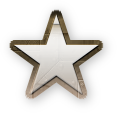
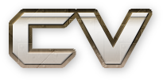
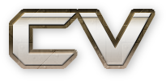

Expositions Personnelles
Solo Exhibitions
Exposition personnelle et présentation Improving and finding solutions avec les projets Diff et Révisable 2 à Suzanne Gallery, Bruxelles. BE.
Solo exhibition and talk Improving and finding solutions introducing the projects Diff and Révisable 2 at Suzanne Gallery, Brussels. BE.
2015
Exposition personnelle Branch à De La Charge, Bruxelles, BE.
Solo exhibition Branch at De La Charge, Brussels, BE.
2013
Installation versionnée Révisable 1 à iMAL, Bruxelles, BE.
Version-based installation Révisable 1 at iMAL, Brussels, BE.
2013
Exposition Volumes dans le cadre de Encore Encore Faire au 22 rue Muller, Paris, FR. En collaboration avec Kevin Bray.
Exhibition Volumes with Encore Encore Faire au 22 rue Muller, Paris, FR. In collaboration with Kevin Bray.
2012
Expositions Collectives
Group Exhibitions
Internet Yami-Ichi Bruxelles, Internet black market, Bruxelles, BE.
Internet Yami-Ichi Brussels, Internet black market, Brussels, BE.
2014
Art Hack Days: Disnovation à Parsons Paris, FR.
Art Hack Days: Disnovation at Parsons Paris, FR.
2014
Meet In Real Life à Frankfort sur Main, DE.
Meet In Real Life in Frankfurt am Main, DE.
2013
DEAD DROP #5 BEST OF commissionné par Fach & Asendorf. Museum of Moving Image NYC, USA.
DEAD DROP #5 BEST OF curated by Fach & Asendorf. Museum of Moving Image NYC, USA.
2013
Conférences et Présentations
Public Talks
Typographie, quoi de neuf ? au Labo de l’Édition, Paris, FR.
What’s new in typography? at Labo de l’Édition, Paris, FR.
2014
Use & Modify, my font collection is yours, Libre Graphics Meeting 2014, Leipzig, DE.
Use & Modify, my font collection is yours, Libre Graphics Meeting 2014, Leipzig, DE.
2013
Unified Font Repository, Libre Graphics Meeting 2013, Madrid, ES.
Unified Font Repository, Libre Graphics Meeting 2013, Madrid, ES.
2013
Présentation Pro-AM: Art and culture on the Internet , au Western Union Vancouver, CA.
Talk: Pro-AM: Art and culture on the Internet , at Western Union Vancouver, CA.
2012
Présentation : La paternité des œuvres netart. WJ-Spots Brussels: History and future of artistic creation on the Internet, iMAL, Bruxelles, BE.
Talk: Authorship and netart . WJ-Spots Brussels: History and future of artistic creation on the Internet, iMAL, Brussels, BE.
2011
Surfing Clubs – Une introduction au netart à Kawenga, Montpellier, FR.
Surfing Clubs – Introduction to netart. at Kawenga, Montpellier, FR.
2009
Surfing Clubs – Une introduction au netart aux Nuits Sonores, Lyon, FR.
Surfing Clubs – Introduction to netart at Les Nuits Sonores, Lyon, FR.
2009
Performances
Performances
MFF2010: Connected Cities, Live audio-visual performance à iMAL, Bruxelles, BE.
MFF2010: Connected Cities, Live audio-visual performance at iMAL, Brussels, BE.
2009 – 2010
Improvisation Graphique au Colloque des Industries Culturelles et Créatives. Espace Flagey. Bruxelles, BE.
Graphic Improvisation at Colloque des Industries Culturelles et Créatives. Espace Flagey. Brussels, BE.
2009 – 2010
Performance Son Image Movement avec danseurs à ART 77, Bruxelles, BE.
Performance Son Image Movement with dancers at ART 77, Brussels, BE.
2010
Nouvelles improvisations durant le festival Nuits Sonores, aux Beaux Arts de Lyon, FR.
Nouvelles improvisations during Les Nuits Sonores, at Beaux Arts de Lyon, FR.
2009
Improvisation en réseau à iMAL, Bruxelles, BE. sur un instrument développé avec Processing.
Remote improvisation at iMAL, Brussels, BE.
2009
Ateliers
Workshops
Organisation du workshop Pictoporn. Avec VTF, à La Générale, Paris, FR.
Workshop Pictoporn. With VTF, at La Générale, Paris, FR.
2015
Organisation du workshop OLA #0 : Expérimenter l’édition libre, première édition du cycle d’atelier d’Outils Libres Alternatifs. À La Générale, Paris, FR
Workshop OLA #0 : Experimenting Free/libre publication, first edition of a workshop cycle by Outils Libres Alternatifs. At La Générale, Paris, FR
2015
Organisation du workshop Web Fiction : Atelier de web design spéculatif aboutissant à la création de sites web d’entreprises fictives. ECV Provence, Aix en Provence, FR.
Workshop Web Fiction: speculative design exercise leading to corporate websites of fictional corporations. ECV Provence, Aix en Provence, FR.
2015
Organisation du workshop Monoïde : fonderie en ligne pour les étudiants des Beaux-Arts de Rennes.
Workshop Monoïde, online type foundry for the students of les Beaux-Arts de Rennes.
2014 - 2015
Organisation du workshop sans titre : fonderie en ligne pour les étudiants des Beaux-Arts de Besançon.
Workshop untitled, online type foundry for the students of les Beaux-Arts de Besançon.
2014 - 2015
Organisation du workshop Résistance pour les étudiants des Arts Décoratifs de Paris, avec VTF, à La Générale, Paris, FR.
Workshop Résistance for the students of les Arts Décoratifs de Paris, with VTF, at La Générale, Paris, FR.
2015
Organisation du workshop Éditions Dispersives, sur des methodes d’éditions alternatives HTML / CSS print au Campus de la Fonderie de l’Image, Bagnolet.
Workshop Dispersive Edition, about alternative edition techniques using HTML / CSS print at Campus de la Fonderie de l’Image, Bagnolet, FR.
2014
Organisation du workshop Vagabondage Typographique Festif avec VTF, à la Générale, Paris, FR.
Workshop Vagabondage Typographique Festif with VTF, at La Générale, Paris, FR.
2014
Organisation du workshop Libre object design tools pour Design September avec Libre Objet, à la Microfactory, Bruxelles, BE.
Workshop for Design September with Libre Objet, at Microfactory, Brussels, BE.
2014
Organisation du workshop Objets Versionnés à l’ESAD Valence.
Workshop Objets Versionnés at ESAD Valence, FR.
2014
Organisation du workshop Artisanat du webdesign à De La Charge, Bruxelles, BE.
Workshop Artisanat du webdesign at De La Charge, Bruxelles, BE.
2013
Organisation du workshop Wild Webcraft Workshop au Festival International de l’Affiche et du Graphisme de Chaumont.
Workshop Wild Webcraft Workshop at Festival International de l’Affiche et du Graphisme de Chaumont, FR.
2012
Recherches
Researches
Schizologies – sur la création de personae à des fins artistiques et autobiographiques.
Schizologies – about personas creation as an artistic and autobiographic practice, to experiment style, language and social interactions.
2008
Mulp – proof of concept for an online Multi User Laboratory Platform. Essai pour un outil d’improvisation graphique en ligne.
Mulp – proof of concept for an online Multi User Laboratory Platform.
2008
Worknet – about the influence of social networks in contemporary graphic design. Essai sur la sub-culture graphique évoluant sur la première génération de réseaux sociaux en ligne.
Worknet – about the influence of social networks in contemporary graphic design.
2008
Publications
Publications
Étapes #220 – présentation du projet Steps Mono.
Étapes #220 – introduction of the projet Steps Mono.
2014
Nichons-nous dans l’Internet #2, en tant qu’ECOGEX.
Nichons-nous dans l’Internet #2, as ECOGEX.
2014
Junk Jet #3, #4, #5. Édités par igmade. En tant qu’ECOGEX, Fabien Mousse…
Junk Jet #3, #4, #5. Published by igmade. As ECOGEX, Fabien Mousse…
2010 - 2011 - 2012
Bitcoin Magazine #3, en tant qu’ECOGEX.
Bitcoin Magazine #3, as ECOGEX.
2012
Playful Type. Édité par Gestalten.
Playful Type. Published by Gestalten.
2008
Online: O Fluxo, Sylvia Fredriksson’s notes, El Paìs, Tombolo, Creative Applications, Les Intégristes, Divergence FM, Crap = Good
Activité professionnelle
Professional activity
Designer graphique, développeur indépendant, artiste.
Graphic designer, developer, artist.
Depuis 2008
since 2008
Éducation
Education
Master en Arts. Spécialisation Arts numériques et typographie. École de Recherche Graphique (E.R.G.) Bruxelles, BE.
Master of Arts. Digital arts and typographie. École de Recherche Graphique (E.R.G.) Brussels, BE.
2009 – 2010
Bachelor of Fine Arts, reçu avec grandes distinctions. École de Recherche Graphique (E.R.G.), Bruxelles, BE.
Bachelor of Arts, with great distinction. École de Recherche Graphique (E.R.G.), Brussels, BE.
2008 – 2009
Diplômé Concepteur Designer de niveau 2. École Internationale de Design, Toulon, FR.
Diploma “Concepteur Designer” level 2. École Internationale de Design, Toulon, FR.
2006 – 2008
DUT SRC (Services et Réseaux de Communication). Université de Bordeaux III, FR.
DUT SRC (Networks and communication). University of Bordeaux III, FR.
2004 – 2006
Baccalauréat scientifique, option musique.
Scientific baccalaureate, option music.
2004
Collectifs
Collectives
Co-créateur de Outils Libres Alternatifs, association pour la recherche et la diffusion des outils libres pour la création.
Co-founder of Outils Libres Alternatifs, association for research and diffusion of free / open source creation tools.
Co-créateur de Libre Objet, collectif pour la recherche et la diffusion du design objet sous licence libre.
Co-founder of Libre Objet, collective for research and diffusion of object design under free / open source licenses.
Membre actif de Velvetyne Type Foundry, fonderie de caractères typographiques libres.
Active member of Velvetyne Type Foundry, foundry of libre typefaces.
Pratique et composition musicale. Permis B. Parle Français, Anglais et Espagnol.

 
